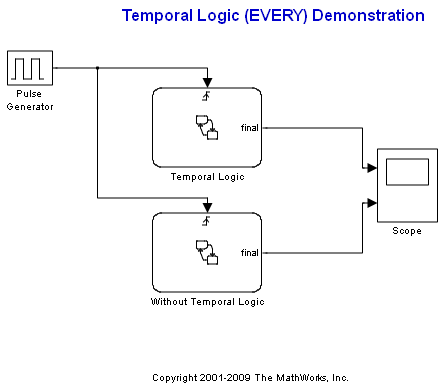
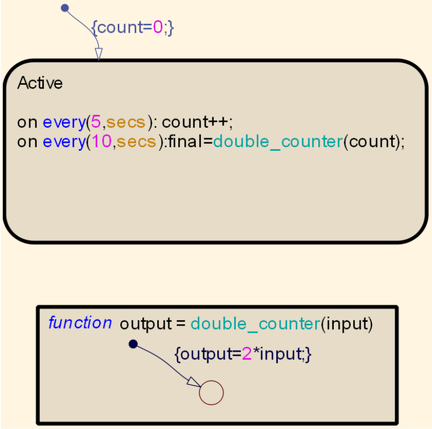

EVERY 関数を使った時相論理
このデモでは、特定のイベントが発生したときに EVERY 関数を使用してグラフィカル関数を呼び出す利点を説明します。時相論理関数を使用せずに同じ動作を実現しようとすると、いかに複雑であるかが理解できます。
目次
時相論理の使用
Temporal Logic チャートでは、every 5 secs (イベント) を指定し、1 つをローカル変数 count に追加します。次に every 10 secs では、入力値を 2 倍にするグラフィカル関数 double_counter を呼び出し、count の値を指定します。時相論理を使用する場合は、このタスクを実行するために必要なのは、1 つのステートと 1 つのグラフィカル関数ブロックです。
時相論理の不使用
Without Temporal Logic チャートでは、Temporal Logic チャートと同じ動作を作成します。これを実現するためには、4 つのステート ブロックと 1 つのグラフィカル関数ブロックを使用する必要があります。また、モデルで発生する遷移やイベントをたどることは、より難しくなります。再び、入力として count を使用してグラフィカル関数 double_counter が呼び出されます。